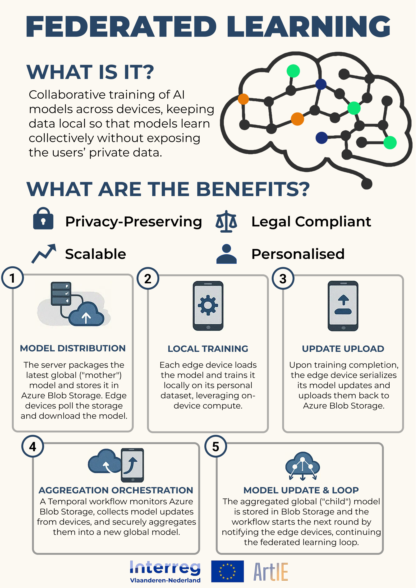

Federated Learning: A Secure and Scalable Approach to AI Training
Empowering collaborative AI development without compromising user privacy.
Published: March 10, 2025
Federated Learning is an advanced method for training artificial intelligence (AI) models across multiple devices or organizations—without transferring raw data. Instead of centralizing data in one location, the learning process happens locally on each device. This allows models to learn from diverse, distributed datasets while keeping personal and sensitive information secure.

Model Distribution
The central server prepares the latest version of the global model and stores it in Azure Blob Storage. Each participating device—referred to as an “edge device”—downloads this version to begin its local training process.
Local Training
Using its own private dataset, the edge device trains the model locally. This ensures data never leaves the device, significantly enhancing privacy and security while leveraging the device’s computing power.
Update Upload
After local training, the device does not send back any raw data. Instead, it uploads only the learned model updates—such as gradients or weight changes—back to Azure Blob Storage.
Aggregation Orchestration
A Temporal workflow monitors the storage, collects updates from all participating devices, and securely aggregates them into a new global model. This step ensures all contributions are combined without exposing any individual’s data.
Model Update & Loop
The aggregated model is saved and redistributed to all edge devices, beginning a new round of training. This continuous loop refines the model with each cycle, improving performance across all devices without violating user privacy.
What Makes Federated Learning Valuable?
Federated learning offers distinct advantages that make it ideal for enterprise and privacy-sensitive environments:
🔒 Privacy-Preserving – Data stays on the device, ensuring sensitive information is never exposed.
⚖️ Legal Compliant – Supports compliance with GDPR, HIPAA, and other data protection regulations.
📈 Scalable – Efficiently supports thousands of users or devices with minimal central infrastructure.
👤 Personalised – Models can adapt to user-specific data without sharing it, enabling more relevant and accurate outcomes.
This approach opens up new possibilities for AI in sectors like healthcare, finance, and government, where data sensitivity and regulatory compliance are critical. With federated learning, organizations can collaborate on intelligent solutions—without compromising privacy or trust.